6
6
ZB6
Spätmittelalterliche Vollrüstung
Deutschland · spätes XV. Jahrhundert
Geflutet & hochwertig dekoriert, hochglanzpoliert.
9900 €unverbindlich
Vollrüstungen und einzelne Rüstungsteile — Kürasse, Eisenhandschuhe, Arm- und Beinzeug — vom späten XIV. bis frühen XVI. Jahrhundert.
Aufgrund sehr schwankender Inputkosten haben alle Preise nur informativen Wert und können geringfügigen Änderungen unterliegen. Bitte erfragen Sie bei jeder Bestellung die aktuelle Preislage — siehe Kontakt.
6
Deutschland · spätes XV. Jahrhundert
Geflutet & hochwertig dekoriert, hochglanzpoliert.
9900 €unverbindlich
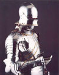
6Deutschland · spätes XV. Jahrhundert
Geflutet & hochwertig dekoriert, hochglanzpoliert.
Ca. 11000unverbindlich
Spätes XV. Jahrhundert
Schaller, Kürass, Oberarmschutz, Diechlinge und Eisenhandschuhe. Leicht kanneliert.
3500 €unverbindlich
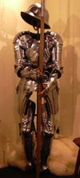
3Spätes XV. Jahrhundert
Helm, Kürass, Armzeug, Beinzeug und Eisenhandschuhe. Leicht kanneliert.
5900 €unverbindlich
 3
3
XVI. Jahrhundert
Armet, Kragen, Kürass, Armzeug, Beinzeug mit Schuhen und Eisenhandschuhe, hochglanzpoliert.
8400 €unverbindlich
 2
2
XIV.–XVI. Jahrhundert
18g. Vernietete Ringe (Ø 6 mm) abwechselnd mit ebenen festen Ringen (Ø 6 mm).
155 €unverbindlich
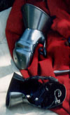
1XIV.–XV. Jahrhundert
Standardmodell.
253 €unverbindlich
 1
1
2. Hälfte XV. Jahrhundert
Standardmodell.
440 €unverbindlich
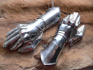
22. Hälfte XV. Jahrhundert
Standardmodell.
485 €unverbindlich
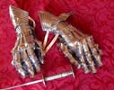
42. Hälfte XV. Jahrhundert
Hochverziert.
1090 €unverbindlich
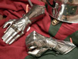
4Deutschland · 2. Hälfte XV. Jahrhundert
Verziert.
1045 €unverbindlich
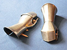
1XV. Jahrhundert
Standardmodell.
299 €unverbindlich
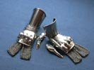
2XV. Jahrhundert
Gehärteter Federstahl. Das Original ist im Besitz des Bayerischen Armeemuseums, Ingolstadt, Deutschland.
649 €unverbindlich
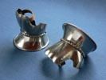
1XIV. Jahrhundert
Standardmodell.
220 €unverbindlich
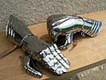
3Deutschland · 2. Hälfte XV. Jahrhundert
Das Original ist im Besitz des Cleveland Museum of Art, Cleveland, USA.
420 €unverbindlich
 5
5
Deutschland · 2. Hälfte des XV. Jahrhunderts
Replik. Die originale Brustplatte ist im Besitz des Deutschen Historischen Museums, Berlin, die Rückenplatte des Bayerischen Armeemuseums, Ingolstadt, Deutschland.
2285 €unverbindlich
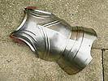
4XV. Jahrhundert
1,5 mm Materialstärke.
499 €unverbindlich
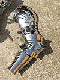
2Spätes XV. Jahrhundert
Standardmodell.
530 €unverbindlich
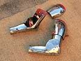
2Spätes XIV.–Anfang XV. Jahrhundert
Ähnliche Rüstungsteile sind im Besitz des Metropolitan Museum of Art, New York, USA.
530 €unverbindlich
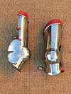
2Spätes XIV.–Anfang XV. Jahrhundert
Ähnliche Rüstungsteile sind im Besitz des Metropolitan Museum of Art, New York, USA.
520 €unverbindlich
 2
2
Spätes XV. Jahrhundert
Standardmodell.
462 €unverbindlich
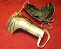
1Spätes XV. Jahrhundert
Standardmodell.
363 €unverbindlich
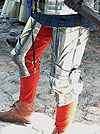
42. Hälfte des XV. Jahrhunderts
Standardmodell.
1289 €unverbindlich
 1
1
Spätes XV. Jahrhundert
Preis inklusive Schienbeinblech.
913 €unverbindlich
{kind=link}
{kind=link}
{kind=link}
{kind=link}
{kind=link}
{kind=link}
{kind=link}
{kind=link}
{kind=link}
{kind=link}
{kind=link}
{kind=link}
{kind=link}
{kind=link}
{kind=link}
{kind=link}
{kind=link}